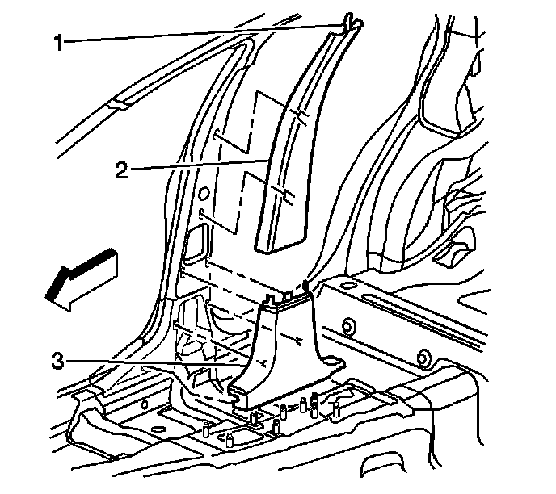

Center Pillar Garnish Molding Replacement
Center Pillar Garnish Molding Replacement
Tools Required
J 38778 Door Trim Pad Clip Remover
Removal Procedure
Caution: Refer to SIR Caution (SIR Caution) .
Caution: In order to prevent SIR deployment, personal injury, or unnecessary SIR system repairs, do not strike the door or the door pillar in the area of the side impact sensor (SIS). Turn OFF the ignition and remove the key when performing service in the area of the SIS.
1. Disable the SIR system.
2. Remove the front carpet retainers. Refer to Front Carpet Retainer Replacement (Service and Repair) .
3. Remove the rear carpet retainers. Refer to Rear Carpet Retainer Replacement (Service and Repair) .

4. Carefully pull outward at the bottom of the lower center pillar trim panel (3) to use the J 38778 in order to release the 3 lower retainer clips.
5. Pull outward on the upper portion of the pillar trim (2) to release the sheet metal retainer clips from the pillar.
6. Slide the pillar trim inward and downward to release the top locking tab (1) from between the sheet metal and the headliner.
7. Remove the center pillar trim.
Installation Procedure
1. Insert the upper center pillar trim panel (2) into the lower center trim panel (3).
2. Position the top of the locking tab (1) to the slot in the sheet metal under the headliner.
3. Push upward in order to secure.
4. Position the upper trim locating tabs to the metal clips in the pillar.
5. Position the plastic retainers to the holes in the pillar.
6. Push inward beginning at the top of the pillar and working downward to the floorpan in order to secure the center pillar trim (3).
7. Install the rear carpet retainers. Refer to Rear Carpet Retainer Replacement (Service and Repair) .
8. Install the front carpet retainers. Refer to Front Carpet Retainer Replacement (Service and Repair) .
9. Enable the SIR system.